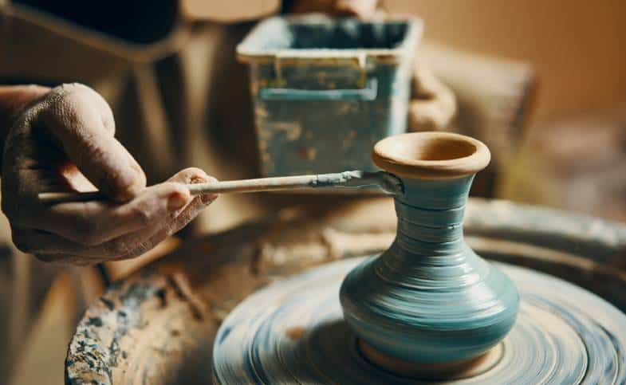
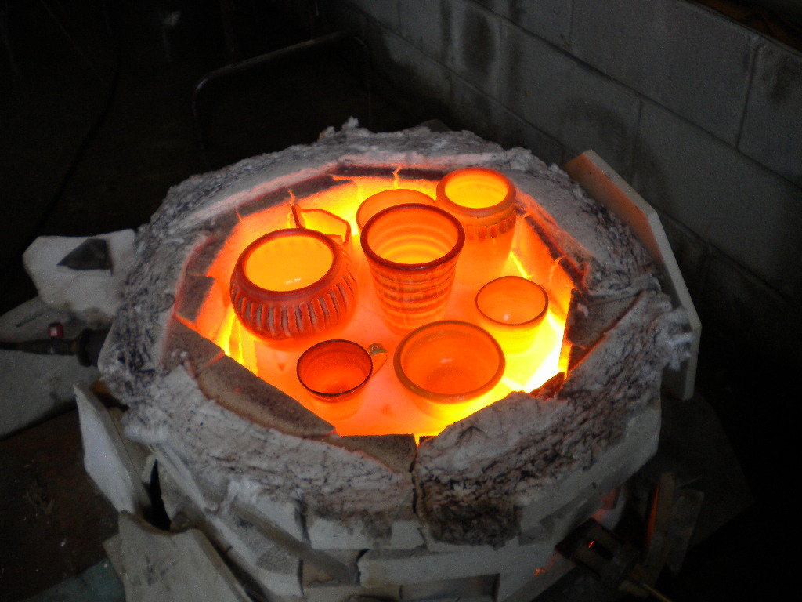

The first step in creating ceramic art pieces is to wedge the clay. This technique is used to evict all of the bubbles out of the clay so that when the piece is being fired in the kiln, it will not explode. This method is called the Ram's Head which is the technique I learned in highschool and I think is the easiest method to learn for beginners.
Glazing pottery is the process of applying a liquid mixture (glaze) to your dried or bisque-fired pottery pieces using paint brushes. Glazes not only add color but also provide a protective coating so your piece is food safe and can enhance the texture of your pottery.
Pottery firing is the process of heating clay objects in a kiln to high temperatures to transform them into durable, hardened ceramic pieces. The firing process involves gradually increasing the temperature inside the kiln to specific levels and holding it there for a certain amount of time. This schedule depends on the type of clay used, the size and thickness of the pottery, and the desired outcome.
After wedging, place a lump of clay in the center of the wheel head and use your hands to center it. This means making sure it's perfectly aligned with the center of the wheel and symmetrical. Press the clay down firmly onto the wheel head to secure it. Try using this guide
Wet your hands and use your thumbs to press down into the center of the clay to create an opening. Keep the pressure even to avoid creating an uneven shape.
With your thumbs inside the opening, gradually pull the clay upwards and outwards to form the walls of your piece. Use a sponge or water to keep the clay moist and your hands lubricated. Keep the pressure consistent to maintain an even thickness. This technique also helps center the clay even more.
Once you've reached your desired height, use your hands and/or tools to shape the clay. You can create bowls, cups, vases, or any other form you like. Experiment with different techniques and tools to achieve the shapes you want.
After your piece has dried to a leather-hard state, you can trim the bottom, using your tools, to remove excess clay and refine the shape. This step helps your piece sit evenly and gives it a professional finish.
Allow your piece to dry completely before firing it in a kiln. Once fired, you can add glazes or other finishes to complete your pottery.
| Step | Description | Information |
|---|---|---|
| 1 | Preheating | The first step in firing pottery is preheating the kiln. This removes any remaining moisture from the clay objects, which helps prevent them from cracking or exploding during the firing process. Preheating typically involves gradually raising the temperature inside the kiln to around 200-300°C (392-572°F). |
| 2 | Bisque Firing | After preheating, the pottery undergoes bisque firing. During this stage, the temperature inside the kiln is raised to a relatively lower range, typically between 900-1000°C (1650-1830°F). Bisque firing hardens the clay, transforming it into a durable ceramic material that is porous and ready to accept glazes. |
| 3 | Glaze Application | Once the bisque-fired pottery has cooled down, glazes are applied to the surface. Glazes are liquid suspensions of minerals and oxides that, when applied to pottery, create a glassy coating upon firing. Glazes can add color, texture, and decorative effects to the pottery. They are carefully applied using brushes, dipping, pouring, or spraying techniques. |
| 4 | Glaze Firing | After the glazes have been applied, the pottery undergoes a second firing, known as glaze firing. The kiln temperature is raised to a higher range, typically between 1150-1250°C (2100-2280°F). During this firing, the glaze materials melt and fuse with the surface of the pottery, creating a smooth, glossy finish. Glaze firing also further strengthens the ceramic material and seals the porous surface created during bisque firing. |
| 5 | Cooling Down | Once the glaze firing is complete, the kiln is turned off, and the pottery is allowed to cool down gradually. Rapid cooling can cause thermal shock and lead to cracks or fractures in the pottery. Therefore, it's essential to cool the kiln slowly to room temperature over a period of several hours or even days, depending on the size and thickness of the pottery. |
| 6 | Unloading and Finishing | After the kiln has cooled down completely, the pottery is carefully removed. Any kiln furniture or supports used during firing are also taken out. The finished pottery may undergo additional finishing touches, such as sanding rough edges, polishing surfaces, or adding handles or other decorative elements. Once these final touches are complete, the pottery is ready for use, display, or sale. |